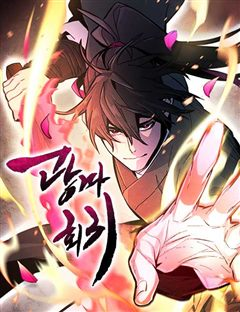
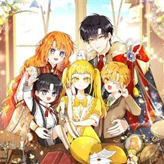
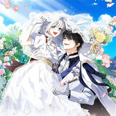
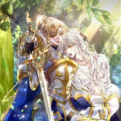

방대한 세계관 웹툰 추천 TOP 30
세계관, 신화, 인외존재, 동양풍판타지, 모험 같은 태그가 붙은 작품을 모았어요. 네이버웹툰·카카오웹툰·레진코믹스에서 조건에 맞는 작품 244개 중 인기 순으로 30개를 골랐어요. 인기 TOP 3: 신의 탑, 화산귀환, 전지적 독자 시점
2026-10-07 기준 · 성인 작품 제외
내 취향으로 더 좁혀서 추천받기 →-
1

-
2
 네이버웹툰
네이버웹툰화산귀환
대 화산파 13대 제자.천하삼대검수 매화검존 청명. 천하를 혼란에 빠뜨린 고금제일마 천마의 목을 치고 십만대산의 정상에서 영면. 백 년의 시간을 뛰어넘어 아이의 몸으로 다시 살아나다. ......뭐? 화산이 망해? 이게 뭔 개소리야!?
세계관동양풍판타지명작개그회귀네이버웹툰에서 보기 → -
3
 네이버웹툰
네이버웹툰전지적 독자 시점
'이건 내가 아는 그 전개다' 한순간에 세계가 멸망하고, 새로운 세상이 펼쳐졌다. 오직 나만이 완주했던 소설 세계에서 평범했던 독자의 새로운 삶이 시작된다.
세계관레드아이스 스튜디오게임아포칼립스게임판타지네이버웹툰에서 보기 → -
4
 네이버웹툰
네이버웹툰호랑이형님
신비한 힘을 가진 아이를 이용하여 세상을 지배하려는 반인반수 흰눈썹! 그리고 얼떨결에 아이의 보호자가 된 괴물호랑이 빠르와 착호갑사 지망생 가우리! 이제 힘을 합쳐 흰눈썹으로부터 아이와 세상을 지켜라!!!
세계관동양풍판타지명작판무동물네이버웹툰에서 보기 → -
5

네이버웹툰광마회귀
무공에 미친 광마 이자하. 그는 마교 교주의 천옥을 훔쳐 쫓기던 중 벼랑에서 떨어지게 된다. 모든 게 끝났다고 생각한 순간 눈을 떠보니, 사람들에게 무시당하던 점소이 시절로 돌아와 있는데... 게다가 억울한 누명으로 두들겨 맞고 객잔은 박살이 나 있는 상황. 점소이 시절로 회귀한 광…
세계관사이다회귀판무소설원작네이버웹툰에서 보기 → -
6

-
7
 카카오웹툰
카카오웹툰냉혈
’1242년 몽골군의 진격을 멈췄던 건 인간이 아니었다.’ 동유럽을 휩쓸며 피바람을 일으키던 몽골군. 그들의 발길이 닿는 곳은 폐허만이 남는다. 그렇게 수많은 희생자들이 흘린 피로 인해 전혀 예상하지 못한 존재가 깨어나고 마는데…… 다급해진 몽골군 총사령관 수부타이는 사냥꾼 부대를 만…
전쟁서스펜스카카오웹툰에서 보기 → -
8
 네이버웹툰
네이버웹툰일렉시드
<노블레스> 손제호 작가와 <소녀더와일즈> 제나 작가가 만났다! 고양이 몸에 깃든 각성자 카이든과 각성능력을 숨겨온 고등학생 지우 러블리 2인조의 액션 판타지
세계관인외존재이능력배틀아카데미물네이버웹툰에서 보기 → -
9
 네이버웹툰
네이버웹툰내가 키운 S급들
F급 헌터. 그것도 잘나가는 S급 동생 발목이나 잡는 쓸모없고 찌질한 F급 형. 개판된 인생 대충 살다가 결국 동생 목숨까지 잡아먹고 회귀한 내게 주어진 칭호, '완벽한 양육자'. 그래, 이번에는 나대지 말고 얌전히 잘난놈들 뒷바라지나 해 주자. 라고 생각했는데, S급들이 좀 이상하다.
세계관현대판타지현대상태창크리처네이버웹툰에서 보기 → -
10

-
11
 네이버웹툰
네이버웹툰99강화나무몽둥이
약육강식이 진리인 가상 현실 게임 '크로노 라이프'. 허접이라며 무시만 당하던 '나'는 우연히 얻은 초보용 기본 무기 '나무 뭉둥이' 를 +99 강화까지 성공하게 되고, 본인을 무시하던 놈들을 찾아다니며 몽둥이로 무자비하게 패기 시작하는데..! 막장 스케일 사이다 액션 스타트!!
인외존재사이다게임유혹녀명랑녀네이버웹툰에서 보기 → -
12
 카카오웹툰
카카오웹툰갓 오브 블랙필드
"Who am I?" 프랑스 외인부대의 전설 '강찬'! 아프리카 전장에서 그를 상대한 자들은 공포와 경외를 담아 '갓 오브 블랙필드' 검은 땅의 신이라 불렀다. 하지만 수니파 추종 세력 SISS의 수뇌인 마살란 사살 작전에 투입된 강찬은 배후에서 날아든 의문의 총알에 전사하게 되고,…
전쟁서스펜스액션카카오웹툰에서 보기 → -
13
 네이버웹툰
네이버웹툰괴력 난신
살인에서 삶의 즐거움을 느끼는 '겸살귀', 정(正). 대 연목검장의 셋째공자 목경운과 똑같이 생긴 얼굴을 가졌는데... "나의 대역이 되어라. 그러면 옥에서 나갈 수 있게 해 주마." "그 기회. 제게 주시겠습니까?" '촤악-!!!' 셋째공자를 죽여버린다. 그리고 본인이 '진짜'가 되…
세계관동양풍판타지레드아이스 스튜디오천마액션네이버웹툰에서 보기 → -
14
 네이버웹툰
네이버웹툰정글쥬스
의문의 벌레약 ‘정글쥬스’로 인해 곤충인간이 되었다. 이를 숨기며 살던 대학생 장수찬은 어느 날 그 모습을 모두에게 보이게 되고, 곤충인간들의 사회로 들어가 약육강식의 논리와 맞서 싸우게 되는데... 각양각색 곤충능력자들의 판타지 액션 슈퍼스트링 유니버스의 새로운 히어로 등장!
인외존재현대판타지열혈캠퍼스현대네이버웹툰에서 보기 → -
15
 네이버웹툰
네이버웹툰쿠베라
신의 이름을 가진 소녀 쿠베라 리즈. 15세 생일에 외출에서 돌아오다가 초토화되어버린 마을을 목격하게 되는데..! 신, 수라, 마법사들 사이에서 펼쳐지는 소속불명 장르 혼합 판타지.
세계관신화인외존재절망적인마법네이버웹툰에서 보기 → -
16
 네이버웹툰
네이버웹툰멸망 이후의 세계
<전지적 독자 시점> 싱숑 작가 원작. 이것은 모두가 과거로 돌아갈 때 마지막까지 회귀하지 않았던 한 사나이의 이야기다.
세계관레드아이스 스튜디오액션판타지차원이동아포칼립스네이버웹툰에서 보기 → -
17
 네이버웹툰
네이버웹툰66666년 만에 환생한 흑마법사
강대했던 흑마법사 디아블로 볼피르. 12신의 계략에 당해 억겁 속에 봉인되었지만, 그로부터 66666년이 흘러 다시금 이 땅에 강림한다! "응애!" 웰턴 백작의 갓 태어난 장남으로. 딥다크 매직 판타지 시작!
신화중세판타지액션서양마법환생네이버웹툰에서 보기 → -
18카카오웹툰
흑표 가문의 설표 아기님
잡종으로 태어나 외할아버지에게 학대당하다가 죽었다. 내가 가문의 이능을 발현하지 못한 쓸모없는 아이였기 때문에. 기억을 가진 채 과거로 돌아왔지만, 선택지는 과거와 그리 다르지 않았다. 이대로 살다가 전생과 똑같이 학대당해 죽거나, 나를 끔찍하게 싫어하는 아빠를 찾아가거나. '다시 죽…
인외존재로판카카오웹툰에서 보기 → -
19

카카오웹툰아기 다람쥐가 다 잘해요
사자 가문에서 태어난 유약한 다람쥐 수인 베아티. 그 탓에 수도 이모집에서 구박데기로 살다 유일한 친구이자 약혼자인 2황자에게 꿈을 이루기 위해 떠나겠다고 말한 순간, '리테르 너 이 나쁜 새끼…!' 그놈의 독니에 죽었다. 다시 눈을 떴더니 2왕자와 엮이기 전의 어린 시절. 이럴 때…
인외존재로판카카오웹툰에서 보기 → -
20
 네이버웹툰
네이버웹툰마도전생기
정파무림 의천맹의 최강 살수, 천하진. 자유를 찾기 위해 탈출을 감행하지만 코앞에서 목숨을 잃고 만다. 그런데… '신교불패, 만마앙복. 삼공자님의 쾌유를 경하드리옵니다!' 무림의 공적, 마교의 삼공자로 전생해버렸다?! 정파무림 최강 비밀병기 천하진의 마도무림 정복기.
전쟁악역이주인공액션지금추천작성장물네이버웹툰에서 보기 → -
21
 네이버웹툰
네이버웹툰미래의 골동품 가게
남해의 먼 섬에 살고 있는 소녀, '미래'. 미래의 부모님이 바다에서 돌아오지 못한 그날부터, 모든 것들이 변하기 시작했다. 저주를 풀기 위한 단 한 가지의 방법. 소중한 것들을 지키기 위한 기묘한 소녀의 퇴마가 시작된다.
신화동양풍판타지오컬트판타지시리어스현대네이버웹툰에서 보기 → -
22

카카오웹툰여주인공이 나를 새언니로 점찍었다
빨간망토가 늑대를 잡아먹는 19금 피폐 여공남수 소설에 빙의했다. 문제는 그 늑대가 바로 내 남동생이란 사실! 동생과 깊은 숲속에 숨어 인간계로 도망갈 계획을 세우던 중, 눈밭에 쓰러진 여자아이를 발견했다. 아픈 아이를 지나칠 수 없어 지극정성으로 보살폈건만, 이 아이... 하필이면…
인외존재설렘폭발로판카카오웹툰에서 보기 → -
23

카카오웹툰구미호를 잘못 키웠다
어느 날 요괴를 주웠다. 그것도 새끼 구미호를. 녀석의 거취가 고민이 되던 차 만난 동대륙의 신녀, 그녀는 내게 성체가 될 때까지 키운 뒤 고향으로 보내라고 한다. 새끼 여우를 키우라니… 저주받은 인간이 어떻게 어린 생명을 품고 치료한단 말인가. 낯설고 두려웠지만 거부할 수 없었다.…
인외존재고자극로맨스로판카카오웹툰에서 보기 → -
24
 네이버웹툰
네이버웹툰저 그런 인재 아닙니다
스트레스만 받으면 피를 토하는 병약하기 짝이 없는 나, 데온 하르트. 하지만 어쩐지 강하다는 오해를 받고 제국에서는 모두의 두려움을 받는 하르트 명예 백작인 동시에, 마계에서는 마왕이 가장 신임하는 0군단장이 되었는데… 예?! 제가요? 저 그런 인재 아닌데요?!
세계관이세계다크히어로소설원작네이버웹툰에서 보기 → -
25
 네이버웹툰
네이버웹툰절대검감
단전이 부숴졌다는 이유로 집에서는 내놓은 자식 취급을 받던 소운휘는 혈교에 납치되어서도 삼류 첩자로 살아왔다. 어느 날, 전설로만 알려진 검선비록을 찾는데 이용당하다 죽은 운휘는 10년 전, 혈교에 납치되던 그 날로 돌아가게 되고 검의 목소리를 듣는 신비한 능력을 얻는다.
모험동양이능력액션성장물네이버웹툰에서 보기 → -
26
 네이버웹툰
네이버웹툰게임 속 바바리안으로 살아남기
지금껏 아무도 클리어하지 못한 게임 [던전 앤 스톤]을 9년간 플레이한 끝에 최종 보스 스테이지에 도달한 이한수. 그러나 보스 방에 입장함과 동시에, 튜토리얼 완료라는 멘트와 함께 [던전 앤 스톤] 속 바바리안 '비요른 얀델'에 빙의하게 된다. 도시에서 부과하는 막대한 세금을 내지 못…
인외존재게임생존액션판타지네이버웹툰에서 보기 → -
27

-
28
 네이버웹툰
네이버웹툰디펜스 게임의 폭군이 되었다
타워디펜스&던전오펜스 RPG <제국을 지켜라> 누구도 클리어하지 못한 난이도로 게임의 엔딩을 봤다. 그런데 정신을 차리니 게임 속이다. 그것도 공략이 불가능한 튜토리얼 스테이지다. "반드시 클리어해 주마, 이 거지 같은 게임……!"
인외존재게임상태창고인물차원이동네이버웹툰에서 보기 → -
29
 네이버웹툰
네이버웹툰아카데미의 천재칼잡이
후회로 점철된 채 끝나버린 삶. 우연히 찾아온 두 번째 기회. 세상을 구하기 위한 로난의 모험이 시작된다.
인외존재액션판타지마법크리처용사네이버웹툰에서 보기 → -
30
 네이버웹툰
네이버웹툰환생천마
철혈의 맹주, 강호의 절대자 '천하진'. 가문의 수치라 불리는 망나니 '벽리단'의 몸으로 깨어나다! 취미는 사기도박, 검은 창고에 박아둔지 오래. 하루아침에 천하제일인에서 천하의 쓰레기가 된 그는 다시 검을 잡고, 전생에서 이루지 못한 경지에 오르고자 한다.
동양풍판타지사이다천마동양환생네이버웹툰에서 보기 →